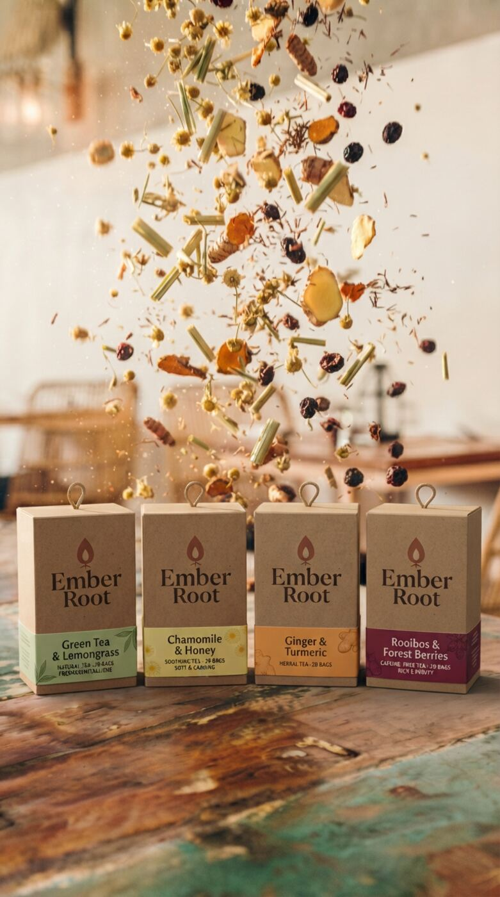

Ons verhaal
“Ember is de gloed die blijft, als het vuur al lang uit is.”
We houden van koffie. Echt. Van de geur om zeven uur, van de kop die je vasthoudt tijdens een gesprek. Alleen werd het om drie uur ’s middags een gewoonte in plaats van een keuze, en lagen we ’s avonds langer wakker dan we wilden.
Dus zochten we iets dat even warm aanvoelt, maar je avond met rust laat. Gember en kurkuma voor de pit, rooibos voor de diepte, kamille voor het einde van de dag. Geen preek, geen detox. Gewoon een glas dat je met plezier vasthoudt.
- Koffie. Die mag blijven.
- Ginger & Turmeric in plaats van kop drie.
- Chamomile & Honey. En slapen.